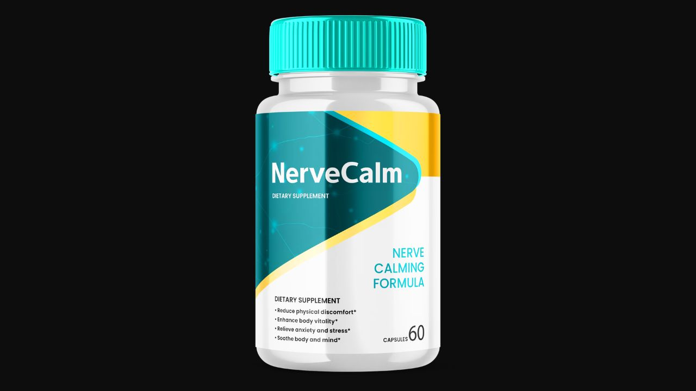

Health Reviews Labs investigated the four botanical pathways behind Nerve Calm — and the critical distinction between nervous system hypersensitivity and structural nerve damage that determines whether this formula fits your situation. Here's the honest breakdown.

Peripheral nerve discomfort has two components that respond to different interventions. Structural nerve damage — from diabetic neuropathy, B12 deficiency, or physical injury — requires medical treatment. No supplement reverses structural damage. Nervous system hypersensitivity — the amplification of pain signals and reduced stress tolerance that makes mild symptoms far more intense than they need to be — is where botanical interventions have a legitimate mechanistic case. Nerve Calm addresses the second problem, not the first. Understanding which is your primary issue changes whether this formula is worth evaluating.
Corydalis · California Poppy · Prickly Pear · Marshmallow Root
→ Click Here for Official SiteNerve Calm is a botanical dietary supplement from Nerve Calm Research, INC. (St. Petersburg, Florida), using four plant-derived compounds targeting the nervous system hypersensitivity that amplifies neuropathic discomfort — tingling, burning, numbness, and the sleep disruption these symptoms cause. It's sold through ClickBank with a 90-day money-back guarantee and comes as a capsule supplement in 30-day supply bottles.
Rather than targeting a single neurotransmitter or pathway, Nerve Calm combines four botanical compounds addressing complementary aspects of nervous system hypersensitivity simultaneously — which is the formulation approach most consistent with how complex nerve discomfort actually presents.
The pharmacologically most active ingredient. Contains l-tetrahydropalmatine (l-THP), a compound researched at UC Irvine for its interaction with dopamine receptors involved in pain signal modulation. Works through a dopaminergic pathway — different from opioid or COX-2 mechanisms — to modulate how pain signals are transmitted and perceived without the dependency risk of opioid-pathway interventions.
GABAergic mechanism — supports the inhibitory neurotransmitter system that regulates nervous system excitability. When GABA activity is supported, the nervous system's amplification of sensory signals decreases. Also researched for sleep quality for the same reason: the calming mechanism that reduces pain amplification also reduces the hypervigilance that disrupts sleep in chronic nerve discomfort. Note: this is botanically unrelated to the opium poppy and contains no opioid compounds.
Antioxidant and anti-inflammatory support targeting the oxidative stress in nerve tissue that worsens both symptom amplification and local inflammatory pain. Addresses the tissue-level component of nerve discomfort rather than the central nervous system signaling components.
Anti-inflammatory and tissue-soothing support. Althaea Officinalis is the botanical name for Marshmallow Root — the same plant listed by both names in the formula. Provides mucilaginous and anti-inflammatory compounds that complement the other three pathways at the local tissue level.
Nerve Calm's botanical formula targets nervous system hypersensitivity through four complementary pathways — dopaminergic pain modulation (Corydalis), GABAergic calming (California Poppy), antioxidant protection (Prickly Pear), and tissue support (Marshmallow Root). This is a coherent formulation logic for adults dealing with mild to moderate nerve discomfort driven by nervous system hypersensitivity rather than structural damage. The 90-day guarantee provides a reasonable evaluation window for botanical mechanisms that build over weeks. The drug interaction profile is real and worth reviewing seriously before use.
GABAergic calming from California Poppy and initial Corydalis pain-signal modulation effects.
Full anti-inflammatory benefit from Prickly Pear compounds accumulates with continued use.
Good fit: Adults with mild to moderate nerve discomfort — tingling, occasional burning, disrupted sleep from nerve sensitivity — who have already ruled out or addressed underlying causes (B12 levels checked, blood sugar in range) and are looking for a botanical adjunct. No significant prescription medication interactions. Realistic 6-8 week evaluation timeline.
Not a good fit: Diagnosed diabetic neuropathy with structural nerve damage (needs alpha-lipoic acid and glycemic control, not botanicals as primary intervention). People on sedatives, benzodiazepines, antidepressants, or blood thinners without physician review. New or progressive symptoms that haven't been medically evaluated. Pregnant or nursing women.
Confirm current pricing on the official site before purchase.
4-Pathway Botanical Formula · 90-Day Money-Back Guarantee
→ Click Here for Official Site